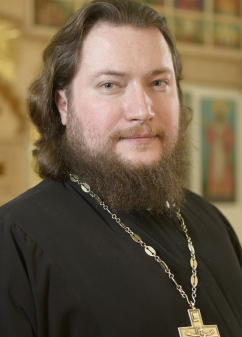
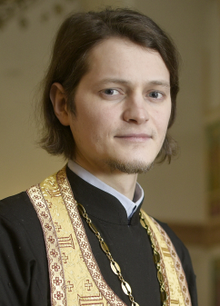
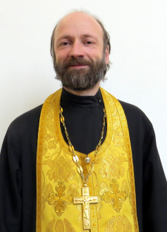

Духовенство
-

Настоятель иерей Артемий Олегович Наумов
- День рождения
- 8 июля 1982
- Именины
- 2 ноября
- Диаконская хиротония
- 24 апреля 2003
- Иерейская хиротония
- 1 ноября 2011
-

иерей Александр Юрьевич Зиновкин
- День рождения
- 16 апреля 1987
- Диаконская хиротония
- 15 февраля 2011
- Иерейская хиротония
- 9 октября 2012
-

иерей Николай Николаевич Савченко
- День рождения
- 1 ноября 1972
- Диаконская хиротония
- 19 сентября 2000
- Иерейская хиротония
- 1 февраля 2004
-
иерей Андрей Александрович Прилуков
- День рождения
- 28 апреля 1985
- Именины
- 13 декабря
- Диаконская хиротония
- 18 июня 2017
- Иерейская хиротония
- 24 марта 2019
- Принят в клир епархии:
- 15 ноября 2019
-
 иерей Алексий Владимирович Сергеев
иерей Алексий Владимирович Сергеев
- День рождения
- 11 февраля 1980
- Именины
- 25 февраля
- Диаконская хиротония
- 21 марта 2017
- Иерейская хиротония
- 9 апреля 2017
- Принят в клир епархии:
- 29 июля 2019
-
иерей Димитрий Анатольевич Пономарёв
- День рождения
- 3 мая 1966
- Именины
- 28 мая
- Диаконская хиротония
- 28 сентября 2003
- Иерейская хиротония
- 6 ноября 2003
- Принят в клир епархии:
- 2 апреля 2020
-
иерей Алексий Анатольевич Жигалов
- День рождения
- 15 января 1977
- Именины
- 25 февраля
- Диаконская хиротония
- 20 июля 2014
- Иерейская хиротония
- 2 ноября 2014
- Принят в клир епархии:
- 18 августа 2020
-
иерей Георгий Михайлович Клеба
- День рождения
- 13 августа 1972
- Именины
- 6 мая
- Диаконская хиротония
- 13 ноября 2010
- Иерейская хиротония
- сентября 2012